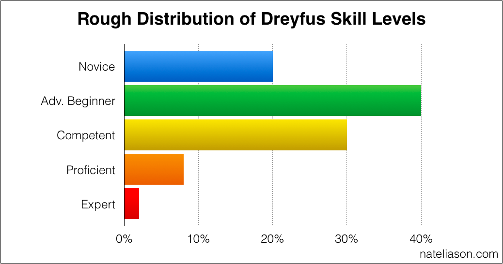

Lesson 39 - Learning & Teaching
LEARN
Office Hours - Remaining Times
- 1:30-2:30 by Zoom
- Mon Nov 29, Wed Dec 1, Fri Dec 3
- If you need help please attend office hours
- Zoom: https://unco.zoom.us/j/99180652183
- Email: mark.seaman@unco.edu
Reading for Today
- Read 7.1 Mobile development tools
- Follow Reading Schedule
Types of Knowledge
- General problem solving
- Technology
Learning Process
- Lifelong learning
- Teamwork & collaboration
- Innovation
Be a learner
- If you stop learning you die
- Select an area of contribution
- What problem interests you
- You are a problem solver
- Do one thing - Priority, Focus
Learn technical skills
- Internet provides excellent resources
- Use free resources to learn any skills you need
What do universities provide?
- Exposure to new ideas
- Guidance about what to learn
- Strategy and process for learning
- Teach you how to think
Skills and Abilities
- Developed over time
- Developed with practice
- Overcome different challenges
- Valued in desired job
Dreyfus Model - Acquiring Skills
Five levels of acquiring a new skill
- Novice
- Beginner
- Competent
- Proficient
- Expert
Learn more at Dreyfus Model
1. Novice
- Familiar with concepts
- Need to follow a recipe
2. Beginner
- Can be successful when carefully supervised
- Cannot adapt to unseen situations
3. Competent
- Formulate own rules of success
- Require deliberate planning
- Can cope with unexpected situations
4. Proficient
- Has broad perspective
- Understands important nuances
- Great teachers
5. Expert
- Transcends rule for intuition
- Able to see the right answer
- Highly analytical in new situations
Acquiring Skills

Leveling Up
Each level of master requires increasing time
Novice - 1 hour
Beginner - 10 hours
Competent - 100 hours
Proficient - 1,000 hours
Expert - 10,000 hours
What is your level?
HTML - CSS - Web Design
- Hours on specific skill
- Mindshare and neural pathways
- Experience = Expertise
- Learning happens by new situations
Calculate your level
- HTML - 30 lessons = 60 Hours
- CSS - 20 lessons = 40 Hours
- Design - 10 lessons = 20 Hours
Skill Distribution
- You don't know what you don't know

On the Job vs. Classroom
- Beginner (one day of learning and practice) - 10 hours
- Competent (one month of practice or a college class) - 100 hours
- Proficient (one year of practice or a Masters Degree) - 1000 hours
- Expert (ten years of practice or a PhD) - 10,000 hours
Be a teacher
- Teaching forces learning
- Be a blogger (1, 3, 5, 10)
- Teach yourself, then teach others
- Get professional value from what you know
BUILD
Quantified Learning
- Make an inventory
- Build a wish list to learn
Select Five Skills
- Identify the skills that you need for your career
- Quantify the number of hours of practice
- Decide where you would like to invest over the next three years
Examples of Skills
Finance Management Marketing
HTML programming CSS Python
Java Script Painting Writing
Story Telling Horticulture Guitar
Horses History Politics
Public Health Social Justice Psychology
Create a Map
- Make a list of your top five skills
- Estimate the invested mindshare in hours
- Calculate your Dreyfus level
Create a Plan
- Identify three skills you would like to grow
- Calculate the mindshare to the next level
- Imagine activities that would get you there
- Select one skill to invest in first